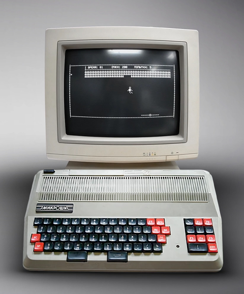

Здесь собираются архивы с эмулятором EMU80 для персонального компьютера "Микроша" (производство СССР). Это клон компьютера (ПЭВМ) "Радио-86-РК", созданный в КБ "Лианозово".

"Микроша" имеет несколько отличий в адресах портов и в адресах вызова подпрограмм Монитора от "Радио-86-РК". Но многие игры и программные пакеты легко адаптируются между этими двумя компьютерами.
В архивах присутствует несколько эмуляторов Пыхонина:
Актуальные исходники можно найти на GitHub: https://github.com/vpyk/emu80v4
Emu80 4.x emulator source code
Ниже дана информация о самостоятельной сборке Emu80, собирать можно как под Windows, так и под Linux.
Внимание! После сборки в корневом каталоге исходников появится исполняемый файл Emu80qt, но он запускаться не будет. Его выполнение будет просто молча завершаться. Чтобы он заработал, его надо переместить в каталог /dist, и запускать его оттуда.
Эмулятор может быть собран в одной из трех версий:
Порядок компиляции и установки Qt-версии (рекомендуется):
git clone https://github.com/vpyk/emu80v4.git
cd emu80v4
qmake src/Emu80qt.pro
make
make install
Порядок компиляции и установки SDL/wx-версии:
git clone https://github.com/vpyk/emu80v4.git
cd emu80v4
make -f Makefile.sdlwx
make install -f Makefile.sdlwx
Порядок компиляции и установки lite-версии:
git clone https://github.com/vpyk/emu80v4.git
cd emu80v4
make -f Makefile.lite
make install -f Makefile.lite
Производится portable-установка в поддиректорию emu80 в домашней директории пользователя: ~/emu80, после чего программа может быть перемещена в любое другое место с условием сохранения доступа на запись в директорию с программой.
Для "чистой" установки можно предварительно удалить директорию ~/emu80. Без удаления будет произведено обновление файлов. Все три версии могут быть установлены в одну директорию одновременно.
Кроме того, с исходным текстом поставляются файлы проектов src/Emu80qt.pro для среды разработки Qt Creator и src/Emu80lnx.cbp для среды разработки Code::Blocks.
Для сборки под Windows могут быть использованы файлы проектов src/Emu80qt.pro для среды разработки Qt Creator и src/Emu80.cbp для среды разработки Code::Blocks.